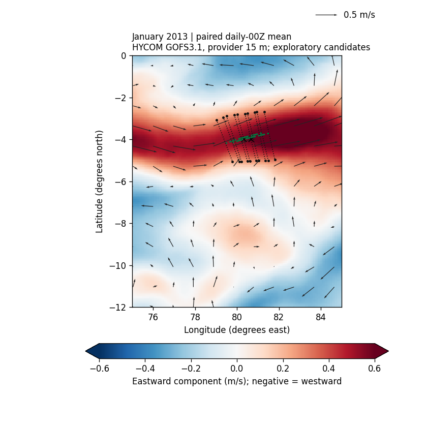

These are model source fields and local candidate tests. No named-current width, whole-current axis, annual range or state passage is admitted.
GOFS3.1 HYCOM+NCODA GLBv0.08 expt53.X, 2013, exact provider 15 m level. Monthly vectors average available paired daily 00Z samples; they are not full three-hourly monthly means, observations or climatology. Two daily samples are absent: August 14 and December 25.
January: 31 of 31 daily 00Z samples; at least 25 valid paired samples required per cell. 18875 eligible cells; 526 cells outside the fixed color scale. 0 primary seeds pass all five axis checks at both steps; 0 also pass all-station paired-edge, resolution and hemisphere checks. Named-current identity remains unverified.
Open selected map at full size

Plate carrée longitude/latitude coordinates. Color shows eastward component; arrows show paired vector direction and magnitude. Black crosses: fixed original seeds snapped to native latitude. Dashed green lines: short candidate mean-field streamlines. Dotted black cross sections: paired half-peak diagnostic spans at 5 km sampling, including failed axis checks. Gray means missing or inadequate paired support, without a separate land classification. No coastline is inferred from that mask.
All months, including failures
On a narrow screen, scroll the table sideways to read every column.
| Month | Sample days | Eligible cells | Both-step axis passes | Stronger candidates |
|---|
| January | 31/31 | 18875 | 0 | 0 |
|---|
| February | 28/28 | 18875 | 0 | 0 |
|---|
| March | 31/31 | 18875 | 0 | 0 |
|---|
| April | 30/30 | 18875 | 0 | 0 |
|---|
| May | 31/31 | 18875 | 1 | 0 |
|---|
| June | 30/30 | 18875 | 0 | 0 |
|---|
| July | 31/31 | 18875 | 0 | 0 |
|---|
| August | 30/31 | 18875 | 0 | 0 |
|---|
| September | 30/30 | 18875 | 0 | 0 |
|---|
| October | 31/31 | 18875 | 0 | 0 |
|---|
| November | 30/30 | 18875 | 0 | 0 |
|---|
| December | 30/31 | 18875 | 0 | 0 |
|---|
Both-step tests use 5 and 10 km profile sampling. Stronger candidates also require paired half-peak edges, four native grid spacings and southern-hemisphere edges at all five stations. Passing these gates would still require named-current association. Product, forcing, temporal support and depth interpretation differ from OSCAR; differences cannot be attributed solely to resolution.
Source and methods